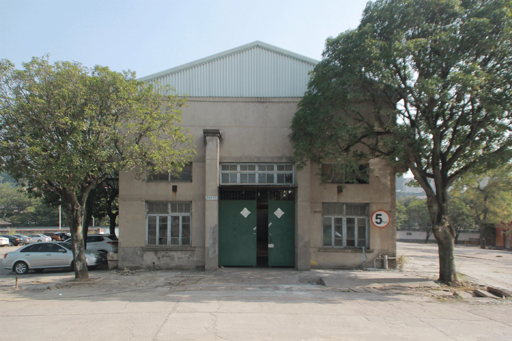
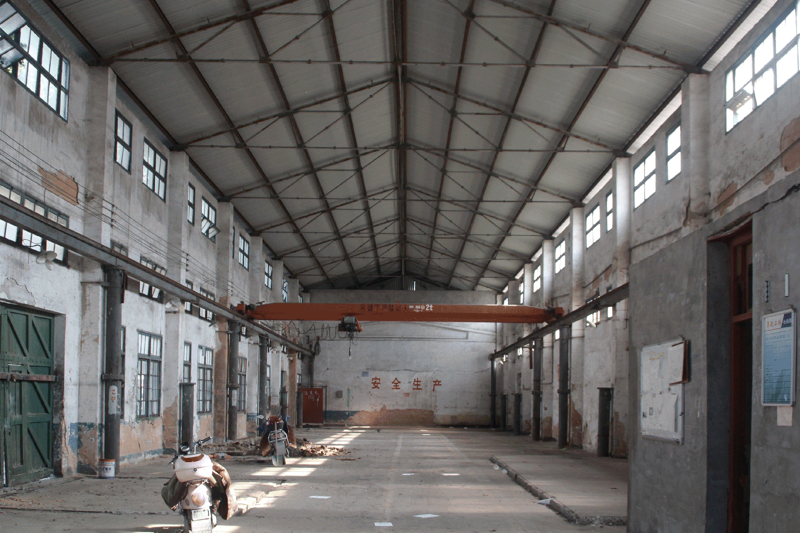
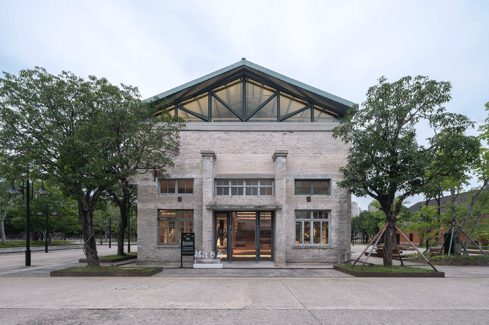
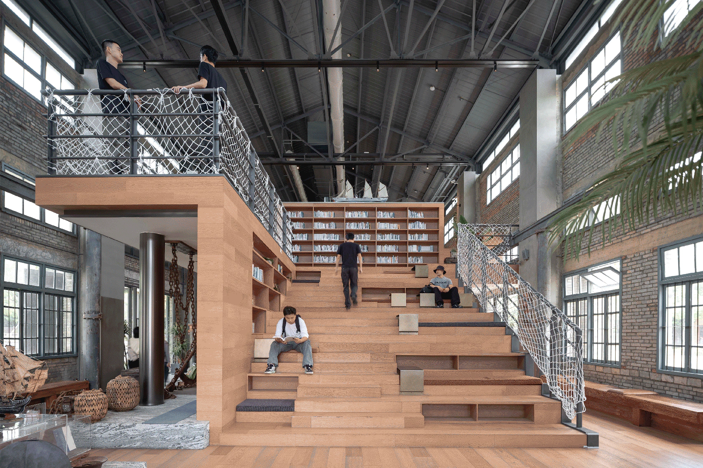
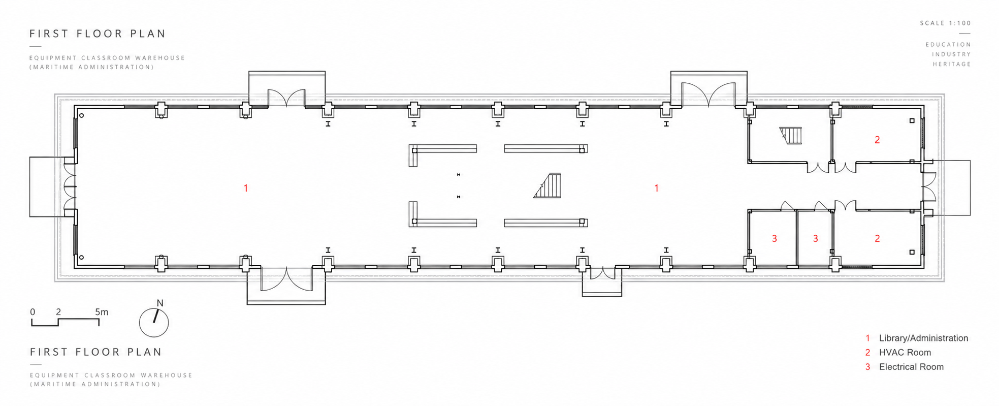
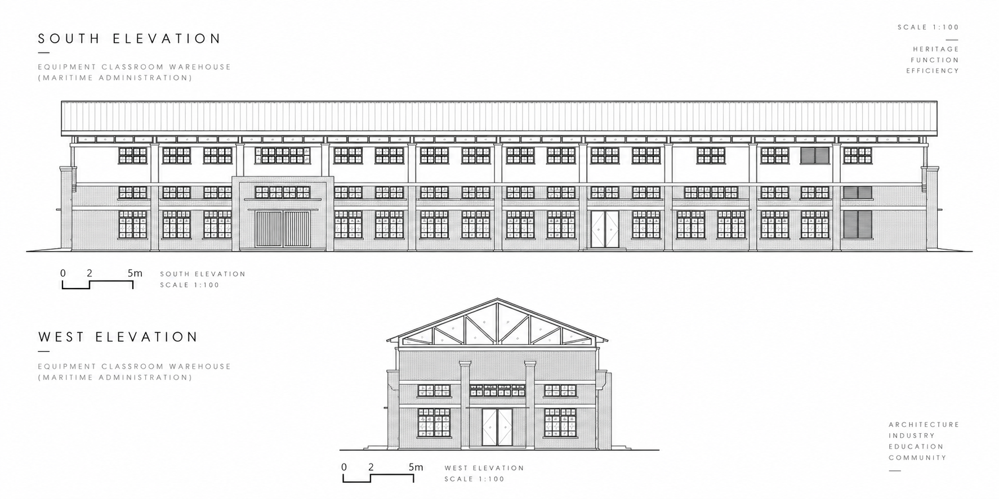
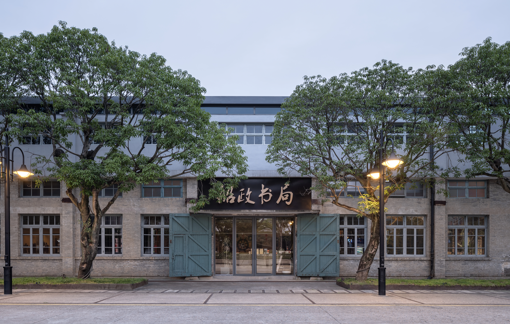
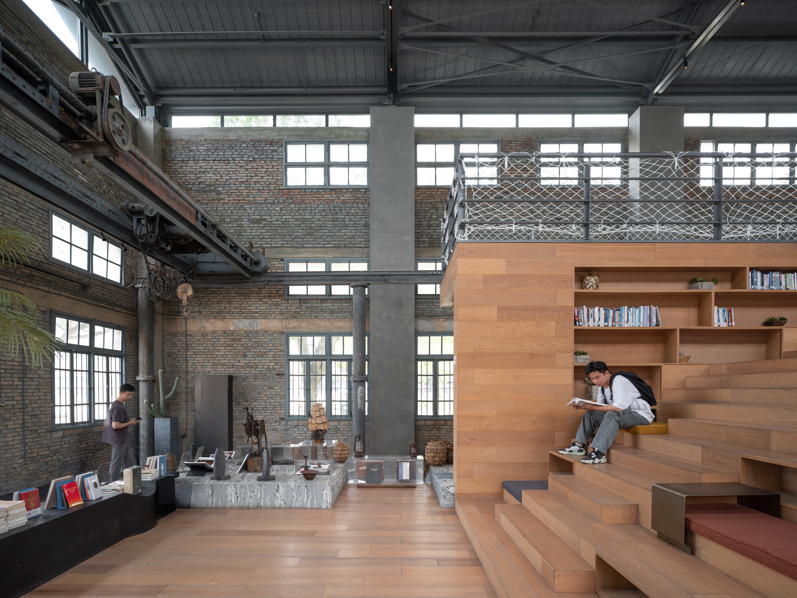

04B
Shipyard Bookstore
This is the first point where the public sequence enters an existing industrial shell. The former Machine Assembly Class Warehouse retains its walls and material traces while new roof, openings and interior organization support a contemporary bookstore.
PLANNING QUESTION
How can an existing workshop hold a new public interior?
EXISTING FIELD
The public route meets a working envelope, an industrial volume and the traces of its former use.

01 / EXISTING EXTERIORWorking envelope
02 / EXISTING INTERIORIndustrial volume
03 / REUSED EXTERIORPublic entrance
04 / REUSED INTERIORReading as public life
DESIGN TRANSLATION
Plans and elevations show how the retained shell is reorganized around a new public programme.


PUBLIC RESULT
A new public interior is inserted without erasing the building's industrial memory.

04B / FINISHED EXTERIORPublic entrance
04B / FINISHED INTERIORReading as public life